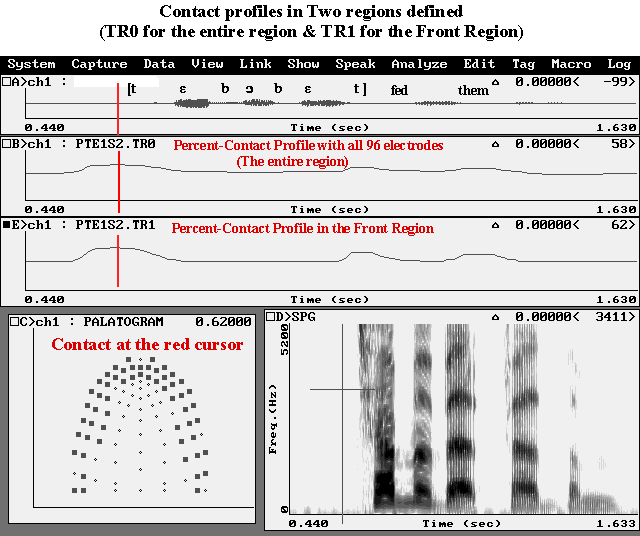
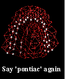
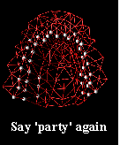
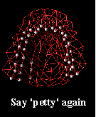
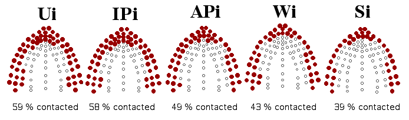

UCLA Phonetics LabELECTROPALATOGRAPHY (EPG) |
The Phonetics Lab acquired its Kay Palatometer Model 6300 in 1992, with a dissertation improvement grant to Dani Byrd, and much use was made of it. While it is still in the lab, it has not been used in years: a DOS program limited to a low sampling rate (12.8 kHz for the audio, 100 Hz for the EPG), it requires an older type of PC with two full-size slots for the Palatometer and CSL boards. The instructions below are kept available for historical purposes.
I. Basic Experimental Steps to Follow
II. How we normally analyze the data
- Get a grant (or inherit money)
- Human subject approval
- Custom pseudo-palate
- Get used to pseudo-palate
- Do the experiment
- Analyze the data
III. Displaying Palatometer in 3D
- Obtain 'Percent.exe' software which is in Frida
- Create a .DEF file
- Create a .BAT (batch) file
- Do batch processing
- Make a configuration (.cfg) for CSL
- Analyze the data using CSL
IV. Some results: Domain-initial strengthening
- French
- Korean
1. Get used to pseudo-palate.
We usually have our speaker wear his or her pseudo-palate to get used to it; the more the better, but usually for an hour of normal activity to accommodate and diminish any salivation response (Byrd et al. 1995).
2. Do the experiment.
- For recording, we need two pieces of hardware, CSL (for audio) and the Palatometer, at the same time, which is the normal setup on Jasmine now in the Physiology Lab (2101E).
- Detailed procedures of data collection:
- Have your subject wear his/her pseudo-palate.
- Turn off the Palatometer, attach a grounding electrode to the speaker (which can be found in 2101P, the 'cool' room), connect the pseudo-palate to the Palatometer, and turn on the Palatometer.
- When ready to collect the data, run "pal.exe" (by typing "pal" - you don't have to be in the directory where the program is, which is also "pal"), and do three steps under the 'setup' menu on the screen:
(1) choose the number of users
(2) choose a user name (a user file such as PKEATNG1.USR, THCHO.USR) for each user (back-ups of these files are on a disk kept near the computer, and Pat and Henry both have copies);
(3) check the sensitivity, by turning the small knob while subject talks until the peak value is in the preferred range.
3. Note about choosing a channel.There are two channels to which two pseudo-palates can be connected at the same time. (This normally allows the clinician to demonstrate a particular articulatory action for the client to imitate.) The default setting is to use Channel 1 when there is only one speaker (which is our normal case), but it is possible that some older pseudo-palates may work better with the Channel 2 connetion pins. If you want to use Channel 2, you have to go to the 'setup' menu and choose it, using the 2 users/large views.
4. Record prepared speech materialsCaution: Since the "pal" program runs under DOS, it can capture data for only about 3 seconds. So, researchers should design their speech corpus accordingly.
5. Two options for the audio signal.
- One is to use a close-talking head-mounted mike in the Physiology Lab (not kept there, but ask Henry). With this set-up you can run an experiment at any time without special preparation or extra help. It should be remembered that this room is not sound-treated in any way. Thus, it is recommended to use a close-talking head-mounted mike.
- The other option is to have the speaker in the sound booth. This gives the best sound, but you must arrange it in advance with Henry, since all the equipment needs to be moved to the general lab. The Palatometer also must go into the booth, and the booth microphone must be connected to Jasmine's CSL. Also, it may require an additional experimenter: one person to operate the program on Jasmine, and one person who can see and signal to the subject in the sound booth.
3. Analyze the data.
The Palatometer manual contains plenty of information on displaying data frames, etc., and on its interactive version of the region definition/percent analysis routine. But the DOS version of this routine, developed here, is what we mostly use, because it allows batch processing and ASCII, as well as binary, output. Experienced people include: Pat K., Taehong C., Sahyang K.. For a description of indices defined on percent-contact data, see Byrd, Flemming, Mueller & Tan (1995), Using regions and indices in EPG data reduction, J. Sp. Hear. Res. 38, 821-827.
II. How we normally analyze EPG data.1. Obtain 'Percent.exe' file.
This software, commissioned by Dani Byrd, calculates contact profiles for user-defined regions of the palate. On Jasmine, it is in the pal\output\ directory
FORMAT: PERCENT [.nsp file name] [.def file name] [.usr file name]2. Create a .DEF file
First, Define regions as needed. The figure below, for example, shows three regions defined: Front Region, Back region, and the entire region (Front + Back). Note that you can define as many regions (up to 10) as needed, using different and/or overlapping areas of the palate.
- There are 96 electrodes and each electrode is assigned its unique number from 1 to 96
- default layout of numbered electrodes (for English, Zulu)
- special layout of numbered electrodes (for Korean, French, Taiwanese)- Assign electrodes regions.
- For example, if you want to examine the contact for the coronal [t] in [to] context but want to exclude the contact caused by the coarticulation with the following [o], you first make control tokens with the [o] articulation (e.g., with [po]) and subtract the [o] contact from the [t] contact in the [to] context. This allows you to define a region just for [t] exclusively. This kind of process is usually done by marking contacted electrodes in the printout of the layout of numbered electrodes which is downloadable (default layout, special layout).
- Using a text editor, make a DEF file. See DEF file sample and explanation.

Figure 1. Layout of EPG pseudo-palate. An example of regions defined. One can define as many regions (up to 10) as needed, using different or overlapping areas of the palate.
(3) Make a .BAT file (batch file)A batch file can run 'Percent.exe' for all the .NSP files you specify. On Jasmine, samples are in the the pal\output directory. See SAMPLE.BAT and Explanation
(4) Do Batch ProcessingFor batch processing, the following files should be included in the same directory (folder) (or, give appropriate path to each file on every line of the batch file):
(5) Make a configuration file for CSL (.cfg file)
- Percent.exe
- a user file (e.g., Sample.USR)
- a def file (e.g., Sample.DEF)
- a batch file (e.g., Sample.BAT)
- all the NSP files that are specified in the batch file (X.nsp, Y.nsp, Z.nsp)
- Run the batch file (simply type the name of the batch file in the DOS mode inside the directory where the above files are)
- The batch processing will generate two types of files, in the same directory as the NSP data files:
- ASCII files (.EXP files)
- EXP file for each .nsp file (e.g., X.exp, Y.exp, Z.exp)
- numerics of the percent-contact for each regions specified in the course of time
- Binary files (.TR0, TR1, TR2, TR3.. files)
- TR0 files: Percent-contact profiles for the FIRST REGION defined
- TR1 files: Percent-contact profiles for the SECOND REGION defined
- TR2 files: Percent-contact profiles for the THIRD REGION defined
- TRn files: Percent-contact profiles for the N+1th REGION defined
- A special configuration file should be used for the display of PALATE and Percent-contact Profiles
- Download some .cfg and .key files (CFG_KEY.zip)
The following .cfg files were made when there were three regions (TR0, TR1, TR2) defined.
and also;
- OneTR.CFG
4 CSL windows - (1) Audio, (2) any one TR file (e.g., TR0), (3) PALATE, (4) Spectrogram- TwoTR.CFG
5 CSL windows - (1) Audio, (2)-(3) any two TR files (e.g., TR0, TR1), (4) PALATE, (5) Spectrogram- ThreeTR.CFG
6 CSL windows - (1) Audio, (2)-(4) TR0, TR1, TR2, (5) PALATE, (6) Spectrogram* When you use these cfg files, change the setting for file directory and log directory before using them.
- Palate.KEY
Keyboard shortcuts useful for analyses; open it with a text editor and print it out for reference.
(6) Analyze the data using CSL
- Place .cfg and key files in the folder together with other files (.nsp, tr0, exp...)
- Run CSL (type 'CSL' inside the working folder)
- Type 'run ThreeTR.cfg' (for example); this will bring you the screen for EPG analysis
* Note that EPG data can be analyzed using MultiSpeech, but we have usually used CSL due to the convenience of the settings that have already been made for CSL. But certainly one can use MultiSpeech.
<Sample CSL screens with TR0 and TR1 windows>
- Figure 2 shows Contact Profiles for 'Tebebet fed them.' Click here to listen to this file! (Pat's voice)
- Window B shows percent-contact profile in the entire region with 96 electrodes included.
- Window E shows percent-contact profile in the Front Region with the front 48 electrodes included.
- Window C 'PALATOGRAM' shows the contacted electrodes at the red cursor which was placed at the peak contact of the word-initial [t].
- The value '58' at the right corner of Window B means 58% of the 96 electrodes were contacted at the cursor.
- The value '62' at the right corner of Window E means 62% of 45 electrodes (Front Region) was contacted at the cursor.

Figure 2. ( Click here to listen to this file! ) Percent-Contact profiles for 'Tebebet fed them.' This was obtained from data collected for the NSF funded 'Prosody Strengthening' project (Pat Keating). This particular sample shows the articulatory difference between sentence-initial onset [t] and word-final coda [t] in 'tebebet': greater percent-contact was found for the sentence-initial [t] than word-final [t].
III. Displaying Palatometer in 3-D
- Cheng Cheng Saw Tan developed a method of displaying Palatometer data in 3-D, on a wire model palate. These displays are the source of the "Flying Palate" used as a screensaver on some of the Macs in the lab. Her procedures are fully documented in WPP #85 (1993). Pat has all of her QuickTime files, and a video of one of them is in the video cabinet in the lab.

3D Wire Model Palate "Flying Palates"
Sample Movies. Click icons to see movies.


  
 
IV. Domain-initial strengthening : French and KoreanKeating et al (1998, LabPhon 6) and many other studies supported by NSF grant #SBR 9511118 (to P. Keating) showed, in their EPG studies of English, French, Korean, and Taiwanese, that consonants have greater linguopalatal contact in a domain-initial position than in a domain-medial position and that this effect is in general cumulative: the linguopalatal contact becomes greater as the domain is higher in the prosodic hierarchy. Such cumulative effect was more pervasive in one language (e.g., Korean) than in another (e.g., English). Here, we put some results from French and Korean with representative EPG contact figures and sounds (.WAV format).(1) French [Please scroll down to "examples."]
- Ui = Utterance-initial,
- IPi = Intonational Phrase-initial (= Ui-medial)
- APi = Accentual Phrase-initial (= IP-medial)
- Wi = Word-initial (= AP-medial)
- Si = Syllable-initial (= W-medial)
Figure 3. Differences in linguopalatal contact for [n] in French as a function of prosodic position.
Examples:
- As shown in Figure 3, the linguopalatal contact becomes progressively greater as the prosodic position moves up in the prosodic hierarchy, except that there is no substantial difference between Ui and IPi.
- Note also that each initial position of a prosodic domain is the medial position of the immediately higher prosodic domain (e.g., Si = Word-medial, Wi = AP-medial, etc.)
[n]s in bold are target segments which occur in different prosodic positions. Examine the corpus and click each sentence to hear the sound, as you wish. (The Speaker is C. Fougeron.)See French references below.
- Ui Paul aime Tata. Nadia les prot�ge en secret.
'Paul loves Tata. Nadia protects them in secret'
- IPi La pauvre Tata, Nadia et Paul n'arriveront que demain
'Poor Tata, Nadia and Paul will arrive only tomorrow'
- APi Tonton, Tata, Nadia et Paul arriveront demain.
'Tonton, Tata, Nadia and Paul will arrive tomorrow'
- Wi Paul et Tata-Nadia arriveront demain matin.
'Paul and Tata-Nadia will arrive tomorrow morning'- Si Tonton et Anabelle arriveront demain matin.
'Tonton and Anabelle will arrive tomorrow morning'(2) Korean
The figure below shows that the linguopalatal contact varies depending on prosodic position in the direction Ui > IPi > APi > Wi (Wi > Si). (Note: Wi vs. Si was examined separately.)
Figure 4. Differences in linguopalatal contact for [n] in Korean as a function of prosodic position. Wi vs. Si was examined separately.Examples:
[n]s in bold are target segments which occur in different prosodic positions.
Examine the corpus and click below to hear the sound, as you wish. (The voice is T. Cho.)
See Korean References below:
V. Some References of EPG studies done at UCLA
Byrd, D. (1994) Articulatory timing in English consonant sequences. UCLA dissertation. In UCLA Working Papers in Phonetics, 86.
Byrd, D. (1995) C-Center revisited. Phonetica, 52, 285-306
Byrd, D. (1996) Influences on articulatory timing in consonant sequences. Journal of Phonetics, 24, 209-244.
Byrd, D. (1996) A phase window framework for articulatory timing. Phonology,13(2):139-169.
Byrd, D. & C. C. Tan. (1996) Saying consonant clusters quickly. Journal of Phonetics, 24(2):263-282.
Byrd, D, E. Flemming, C. A. Mueller, & C. C. Tan. (1995) Using regions and indices in EPG data reduction. Journal of Speech and Hearing Research, 38:821-827.
Cho, T. (1998) Intergestural timing and overlap in Korean palatalization. In David Silva (eds.) Japanese/Korean Linguistic, vol. 8. CSLI: Stanford University.
Cho, T. (1998) Domain-initial strengthening in the prosodic hierarchy: an EPG study. Proceedings of 11th International Conference on Korean Linguistics (ICKL 11), July 6-9, 1998. University of Hawaii at Manoa.
Cho, T. and P. Keating (1999) Articulatory and acoustic studies of domain-initial strengthening in Korean. J. Phonetics 28:155-190 (2001)
Fougeron, C. (1999) Articulatory properties of initial segments in several prosodic constituents in French. Journal of Phonetics, Vol. 29, No. 2, Apr 2001, pp. 109-135.
Fougeron, C. & Keating, P. (1997) Articulatory strengthening at edges of prosodic domains. JASA, 106 (6), 3728 - 3740.
Fougeron, C. & Keating, P. (1996) : Variations in velic and lingual articulation depending on prosodic position: Results for 2 French speakers", UCLA Working Papers in Phonetics 92: 88-96 (1996)
Fougeron, C. & Keating, P. (1996) Articulatory strengthening in prosodic domain-initial position. UCLA Working Papers in Phonetics, 92, 61-87.
Hayashi, W; Hsu, C; Keating, P. (1999) Domain-initial strengthening in Taiwanese: A follow-up study. UCLA Working Papers in Phonetics, 97, 152-157.
Hsu, C. & Jun, S. (1998) Prosodic strengthening in Taiwanese: Syntagmatic or paradigmatic ? UCLA Working Papers in Phonetics, 96, 69-89.
Keating, P; Cho, T; Fougeron, C; Hsu, C. (1999) Domain-initial articulatory strengthening in four languages. UCLA Working Papers in Phonetics, 97, 139-151. (To appear in LabPhon 6)
Keating, P; Wright, R; Zhang, J. (1999) Word-level asymmetries in consonant articulation. UCLA Working Papers in Phonetics, 97, 152-157.
Saw, Cheng Cheng (1993) Customized 3-D Electropalatography Display. UCLA Working Papers in Phonetics, 85, 71-96.
Thomas, Kim. (1999) Coproduction and Coarticulation in IsiZulu Clicks. PhD. dissertation. UCLA.
(her name is officially listed as Kimberly Diane Thomas-Vilakati)Last updated: Oct. 2017 by P. Keating